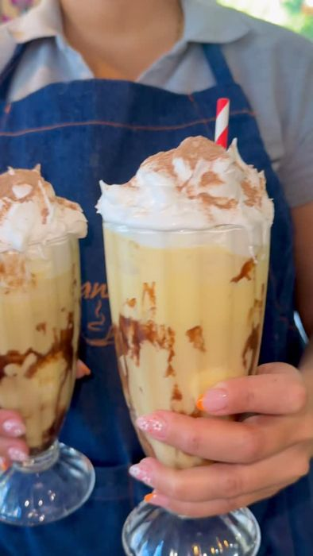
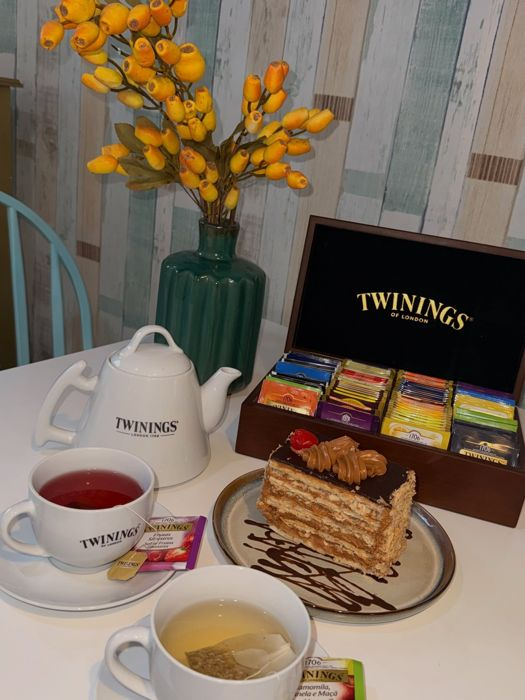
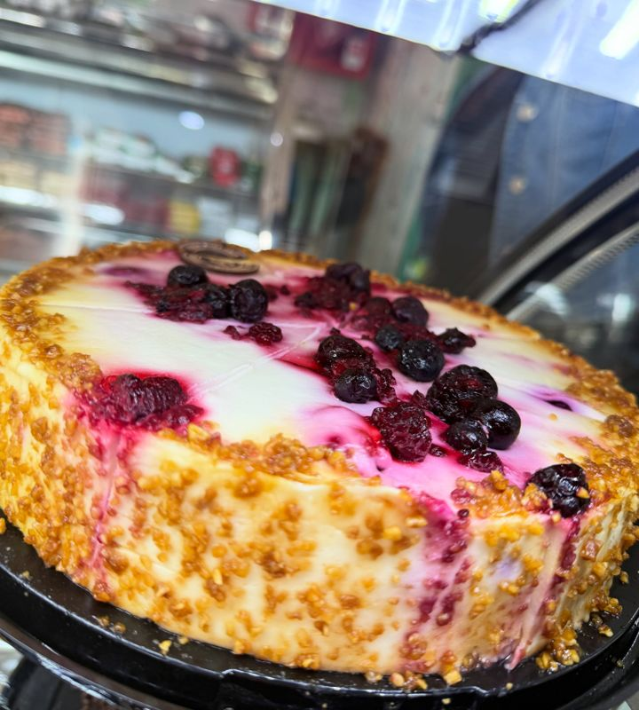
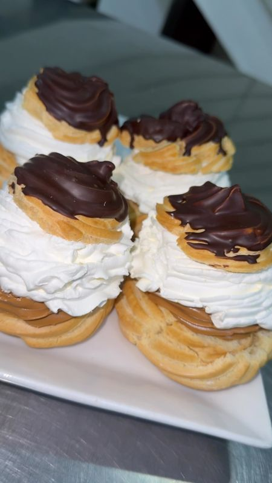
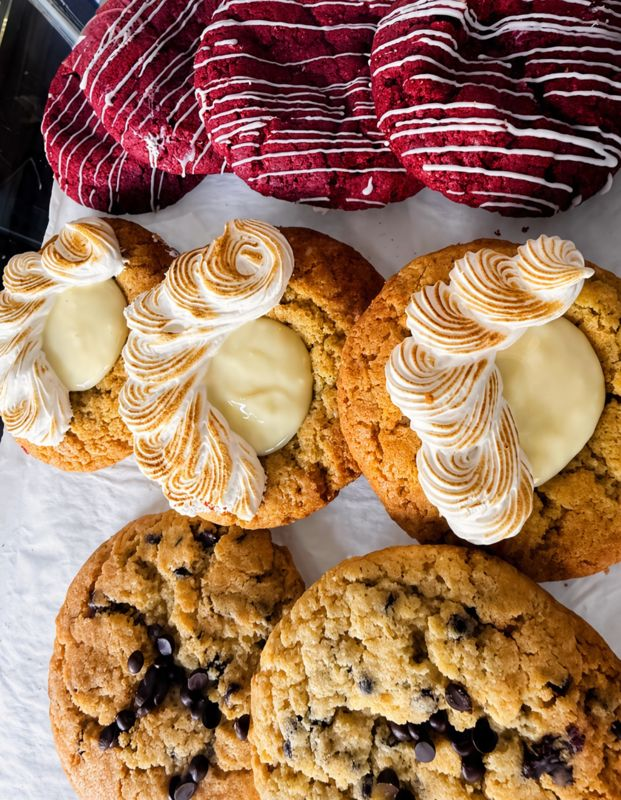
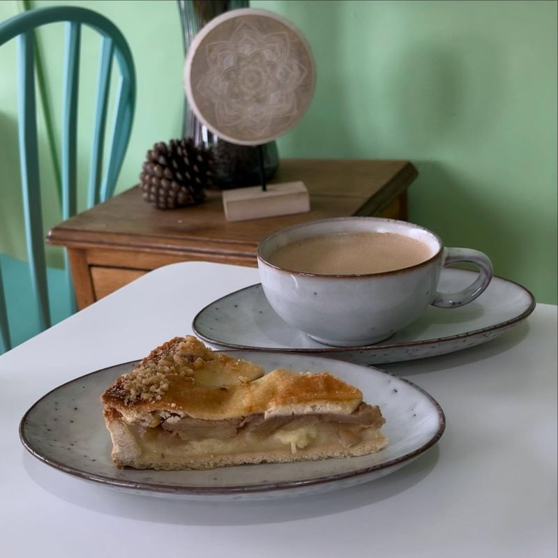
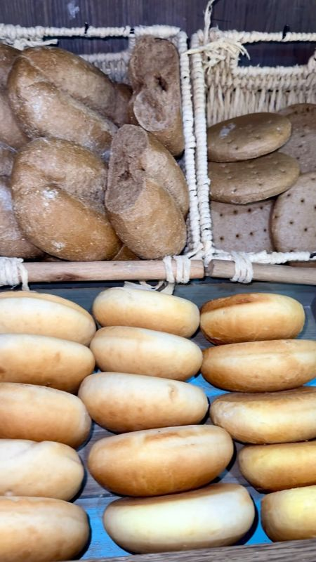
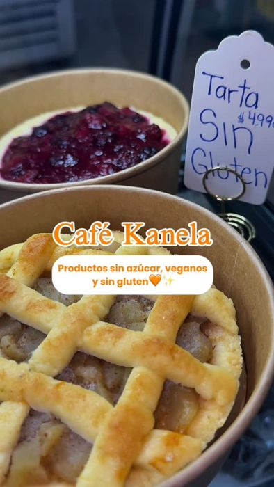

Cafetería · Santiago
Café Kanela
Hecho con amor: café en grano, desayunos, panes especiales y pastelería en Blanco Encalada.
- Revisa el horario
- 710 opiniones en Google · 4,7 ★
Carta
Para hoy








Los valores se confirman al pedir por WhatsApp.
Desde su Instagram
Míralo antes de pedir
Fotos
Así se ve
Opiniones en Google
710 opiniones en Google · 4,7 ★
“Me encanta!! Rico sabor ! Excelente atención !! Sus desayunos son una maravilla”
Nathaly D., en Google
“Buen café en grano! Rico ambiente, grata atención y tienen una amplia variedad. He venido un par de veces y creo que es el mejor café del barrio ✨ Atienden desde tempranito y hay varios lugares para estacionar cerca.”
Francisco P., en Google
“Es un sitio muy recomendable para tomar desayuno y/u once solo o acompañado Santiago. Fui un día de semana y me llamó mucho la atención su grato y acogedor ambiente, decoración "vintage" y sus alternativas de menú que hacen al café Kanela no ser un local del montón. Destaco en particular, el noble gesto de uno de sus trabajadores que atendió muy amablemente a un individuo en situación de calle.”
Rodrigo D., en Google
Visítanos
Cómo llegar
| Lunes a viernes | 06:30 a 20:00 |
|---|---|
| Sábado a domingo | 08:00 a 14:00 |
- Av. Almte. Blanco Encalada 1723, local 1, Santiago
- Opciones sin azúcar, sin gluten y veganas
- +56 9 6337 7702
- Instagram @cafekanela